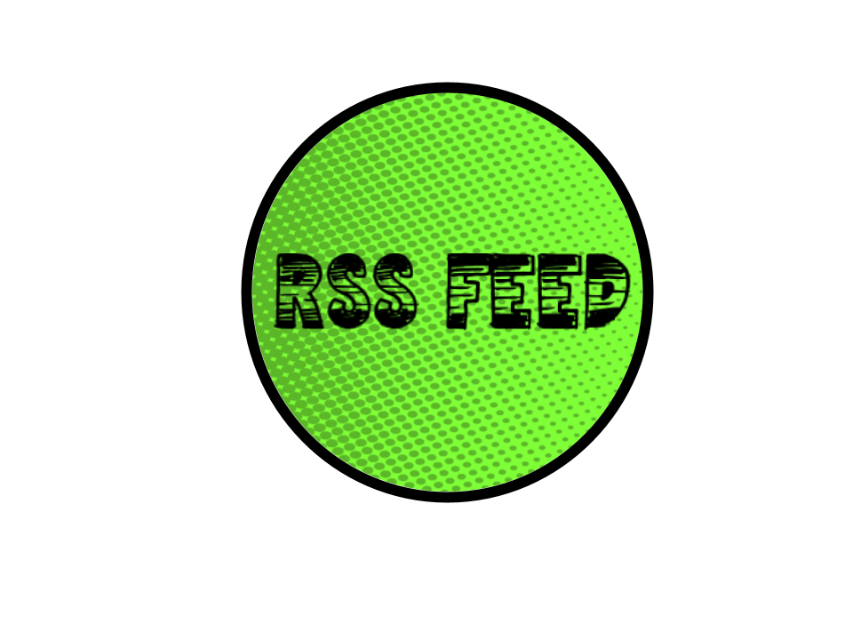
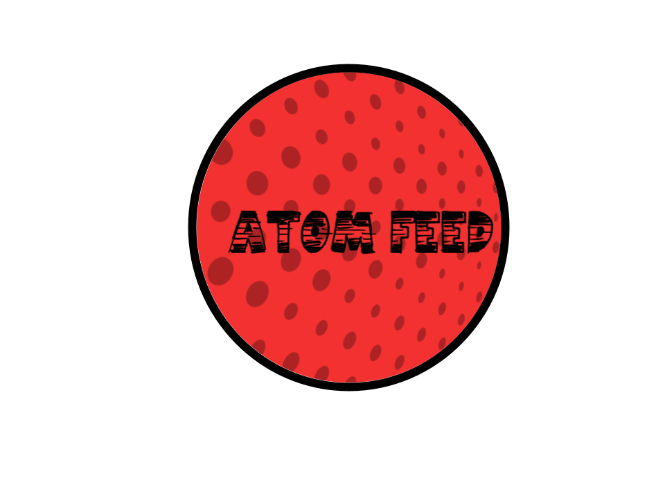

Lab 9: RSS and ATOM Updated
Our Primary Task, like in Lab 4, was to pull RSS feed from news webpages to make our own feeds of any articles. This implementation was done in both RSS and Atom.
However, this time we needed to "beautify" the outputs using JQuery
Click Below to see the Feeds!


 Projects
Home
Projects
Home